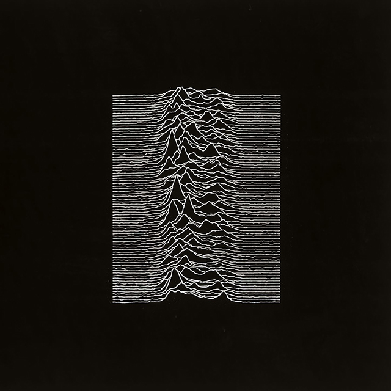
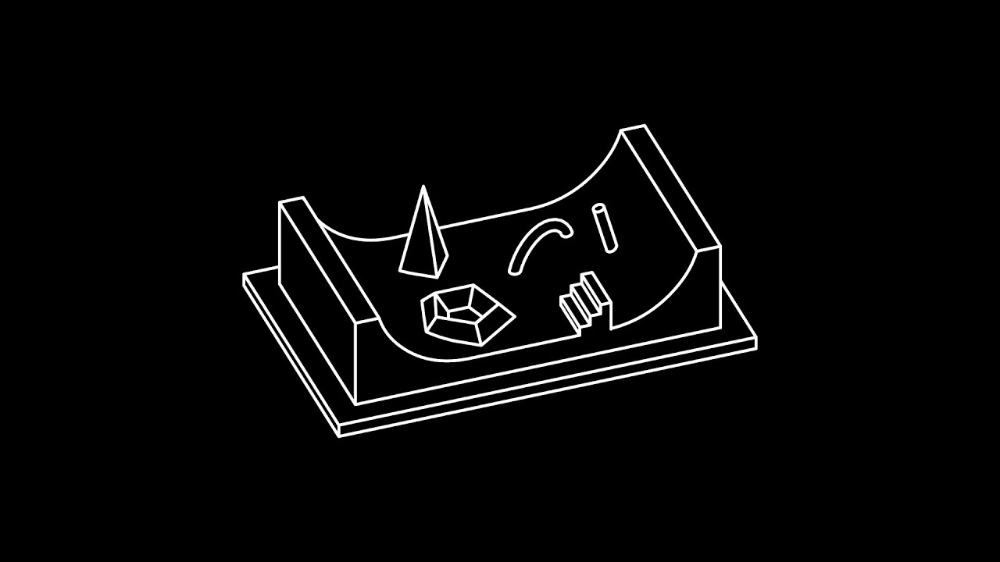
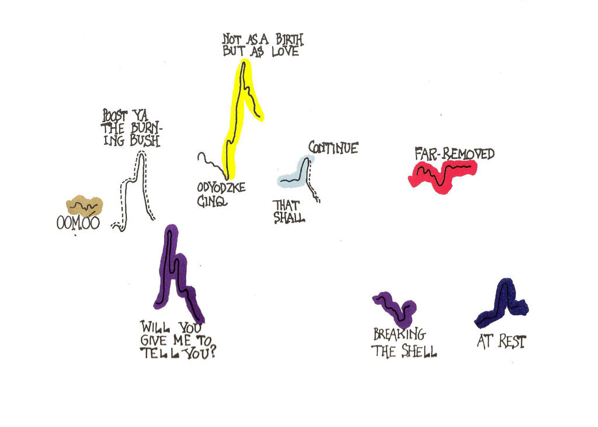
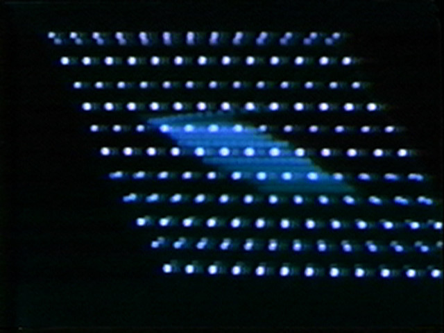
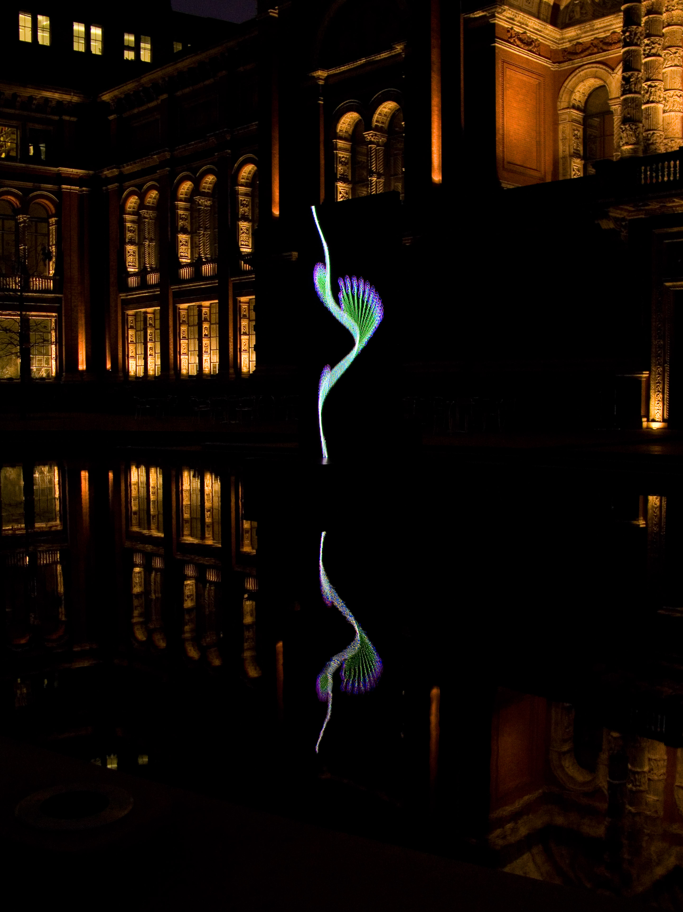

Rendre visible l'invisible
Un son est de par sa nature invisible, mais certains ont réussi à illustrer ce qu’ils entendaient, afin d’en fabriquer une image. Peter Saville a réalisé un travail pour le groupe Joy Division illustrant ces propos. Pour la pochette d’album Unknow Pleasures1 (sortit en 1979) il a retravaillé un graphique illustrant les pulsations d’un pulsar. Ce visuel énigmatique devient vite un classique du graphisme, évoquant toutes sortes de paysages par son effet de vibration et d’ondulation. « Le signal avait une fréquence très serrée et très précise : toutes les 1,337 seconde. Et le diagramme en lui-même est une découpe de la lecture continue de ces ondes, ensuite empilées » explique Peter Saville. La mise en images de ce son capté depuis l’espace et traduit par des procédés numériques, souligne donc l’interaction entre son et forme, et nous montre comment une image peut être fabriquée à partir d’un son. D’une autre façon, des sons peuvent être lus en suivant des formes : Le U rampe sonore2 est une installation réalisée par Guillaume Batista Pina (en collaboration avec d’autres artistes) qui a pour volonté de transformer la rampe en surface sensible et visuelle, métamorphosant ainsi le skateur en interprète. Mais elle permet aussi et surtout de faire communiquer les formes et les sons grâce à la courbe qui devient une boucle sonore. Ici, c’est donc le mouvement et le son qui interagissent, et sont matérialisés par les formes projetées sur la rampe.
Les formes numériques deviennent la clé de la communication entre sons et formes. Elles permettent surtout de pousser plus loin l’interaction sons-formes, en ajoutant une possible part de liberté de lecture.

1.La visualisation des données réinterprétée, selon Peter Saville
2.Démonstration du U Rampe Sonore de Guillaume Batista Pina
3.Interprétation de la partition graphique "Aria" de John Cage
4.Soundsize
de Steina & Woody Vasulka
de Steina & Woody Vasulka
5.V+A Forever
Studio Universal Everythings
Studio Universal Everythings
(Re) lecture des formes
Rendre visible l’invisible, c’est aussi ce qu’ont fait certains musiciens avec les partitions graphiques3 (John Cage, Earle Brown Christian Wolff...). Ceux-ci avaient pour volonté de renouveler la graphie musicale, mais aussi le rapport à l’interprète, transformant les partitions conventionnelles en un appel à un acte créateur complémentaire ; l’interprète devient co-auteur de l’énoncé musical. Celui-ci est invité à relire et réinterpréter ces partitions générées le plus souvent à l’aide d’outils informatiques. Les outils et dispositifs numériques peuvent permettre de faire fonctionner le couple sons-formes en symbiose, notamment avec l’apparition de la vidéo. En 1974, Steina & Woody Vasulka pensaient le projet expérimental Soundsize4, qui avait pour but de traduire le caractère ondulatoire commun à l’image et au son. Ils montrent ou démontrent cette unité, ici par des variations sonores et visuelles collatérales. De surcroît, d’autres travaux beaucoup plus contemporains comme l’installation Forever5 du studio Universal Everythings, démontrent ces caractéristiques. Des formes primitives affichées sur un panneau LED s’agitent au rythme des percussions tribales et mantras, cela nous induit à une (re) lecture des formes à travers une vision sensuelle et envoûtante des nouvelles technologies. Le numérique souligne donc cette idée d’interaction sons-formes, car ils se répondent entre eux, et proposent ainsi une (re)lecture audiovisuelle de par leur génération simultanée.
Notre rapport à l’image et au son a beaucoup évolué avec le temps, vu comme deux médias différents en premier lieu, notamment au cinéma, où les pistes audio et vidéo étaient enregistrés indépendamment l’une de l’autre, puis superposées. Il était déjà question ici de faire vivre une expérience aux spectateurs, mais l’expérience est plus complète lorsque sons et formes se génèrent ensemble, induisant le public à une immersion.